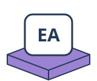
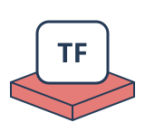

MATHS WEDNESDAYS
Play with an idea.
Make a prediction. Try it out. Find the pattern.
Maths to explore together, on screen and at the table.
Puzzles & strategy
Crack the code
Choose your colours and holes. Play against a secret code, or get help with a physical game.
Explore →Find a SET
Explore 9, 27 or 81 cards. Find triples, ask for graduated hints and print a physical deck.
Explore →Three cards make 15
Take cards from a row into your hand. Two players or a computer opponent; a separate magic-square page reveals the connection.
Explore →15 meets noughts & crosses
Play on the magic square: 8, 1 and 6 form a winning row. Connect all eight winning triples to lines.
Explore →Take-away strategy
Use real counters alongside the screen. Change the rules, undo moves and explore a strategy.
Explore →Tower of Hanoi
Tower of HanoiMove the discs from peg A to peg C. Can you find the fewest moves? Choose from one to eight discs.
Explore →Turing tape puzzles
Write rules for a machine. Follow its head, one step at a time.
Explore →Robot trails
Build a program with turns and loops in a little block world.
Explore →Quick starters & breaks
More playable activities
Paper surprises
Predict, make and test with paperclips, folded loops and paper beams. Keep an experiment log.
Explore →Mystery-weight boxes
Compare hidden weights, arrange the boxes and step through two sorting methods.
Explore →
Explore a strategy
Choose Knuth or Koyama–Lai on the classic board. Open one branch at a time and see the next coloured guess.
Explore →
The final move
Generate a puzzle with exactly one possible answer. Every clue is visible; the solution stays hidden.
Explore →Solve your live game
Enter your coloured guesses and black/white clues. Choose Knuth or Koyama–Lai for a next-move suggestion.
Explore →Dobble & the Fano plane
Dobble & the Fano planeBuild seven matching cards from seven points. Explore why each pair shares one symbol, then play solo or race a friend.
Explore →2D Rigidity Lab
2D Rigidity LabConnect joints with bars. Discover why a square can flex and what a diagonal changes.
Explore →3D Rigidity Lab
3D Rigidity LabRotate a cube, tetrahedron or tower. Add bars and investigate which structures hold their shape.
Explore →Bridge Lab
Bridge LabBuild a truss bridge, inspect tension and compression, then increase the load to test its limits.
Explore →Which card stays?
Number cards or playing cards. Try rows, then a circle. Keep one, remove one, predict the last position.
Explore →After the experiment: why binary?
Explore the connection only when you are ready. Move the leading bit and see why the rule works.
Explore →Spelling Bee
Make words from seven letters. Every word must include the centre letter.
Explore →Five-letter word game
Find a secret word in six guesses. Repeated letters are scored individually.
Explore →Rubik’s Cube
Explore real cube moves on an unfolded net. Scramble, turn faces and reverse your moves.
Explore →Multiply to the target
Start at 1. Take turns multiplying by 2–9. First to reach or pass the target wins.
Explore →Which poker hand wins?
Compare two hands using five shared community cards. Identify the strongest five-card combination.
Explore →Chase, escape & pursuit
Watch points chase one another, or steer an escaping point away from its pursuers.
Explore →Different totals
Fill a square with −1, 0 and +1 so every row and column has a different total.
Explore →The divisor game
Take a number; give its remaining proper divisors to your opponent. Two players compete for the highest score.
Explore →Add to your neighbours
Remove an interior number and add it to both neighbours. Which order makes the biggest final total?
Explore →Secret messages
Encode, decode and crack Caesar ciphers. Explore all 26 shifts of the alphabet.
Explore →Pixel art studio
Paint one square at a time. Try mirrored patterns, undo strokes and save your artwork.
Explore →Build a robot
Choose a head, eyes, mouth and antenna. Design your own robot and save it as an SVG.
Explore →Enigma explorer
Change rotor settings and trace a letter through the machine.
Explore →Dobble solo
Spot the match and work through the deck.
Explore →Dobble for two
A shared card, two players and a race to spot the match.
Explore →Mastermind: Koyama–Lai puzzles
More code-breaking challenges to investigate.
Explore →